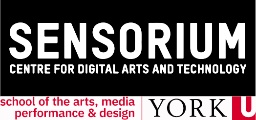
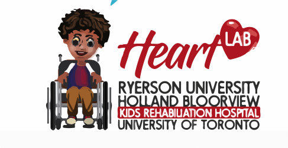

Contact Us
hello@dobbledebate.com
Open Source
Dobble Debate is publically available for modification and development through GitHub
Browser & Device Support
Dobble Debate has been designed to work on desktop, tablets and mobile devices. You can play the game on both Windows and Mac operating systems. Supported browsers are Google Chrome, Apple's Safari, Microsoft Edge, and Firefox.
Land Acknowledgement
OCAD University acknowledges the ancestral and traditional territories of the Mississaugas of the Credit, the Haudenosaunee, the Anishinaabe and the Huron-Wendat, who are the original owners and custodians of the land on which we stand and create.
Funding & Support
Dobble Debate was developed at OCAD University in partnership with Sensorium Lab, York University and Heart Lab, Ryerson University, Holland Bloorview Kids Rehabiilitation Hospital & the University of Toronto

The digital version of this project is made possible with funding by the Government of Ontario and through eCampusOntario’s support of the Virtual Learning Strategy. To learn more about the Virtual Learning Strategy visit: https://vls.ecampusontario.ca.


The Team
The following people all contributed to the creation of the current digital version of Dobble Debate. We would also like to acknowldege all those who has participated in previous phases of the project
Marcia Adolphe, Anonymous, Raphael Arar, Michael Awad, Courage Bacchus, David Bobier, Jack Butler, Ted Carrick, Colin Clark, Nina Czegledy, Dan Czutrin, Shital Desai, Robert Durant, Deb Fels, Eamon Gaudio, Howard Green, Lynne Heller, Alexa Hickox, Lynn Hughes, David Kolenda, Jananda Lima, Wesley Magee-Saxon, Christine Malec, Jo-Ann Martin, Jonah Monaghan, Fiona Moola, Michele Niffeler, Justin Obara, Joel Ong, Adrian Petterson, Nedward W. Rehanek, Myra Rodrigues, David Rokeby, Veronica Rutherford, Furyal Sadiq, Alex Semmelhack, Colleen Shea, Martin Shook, Delilah Simoes-Shand, Rohan Smith, Matheus Trece, Shelley Wall, Melanie Wilmink, Sol Younan